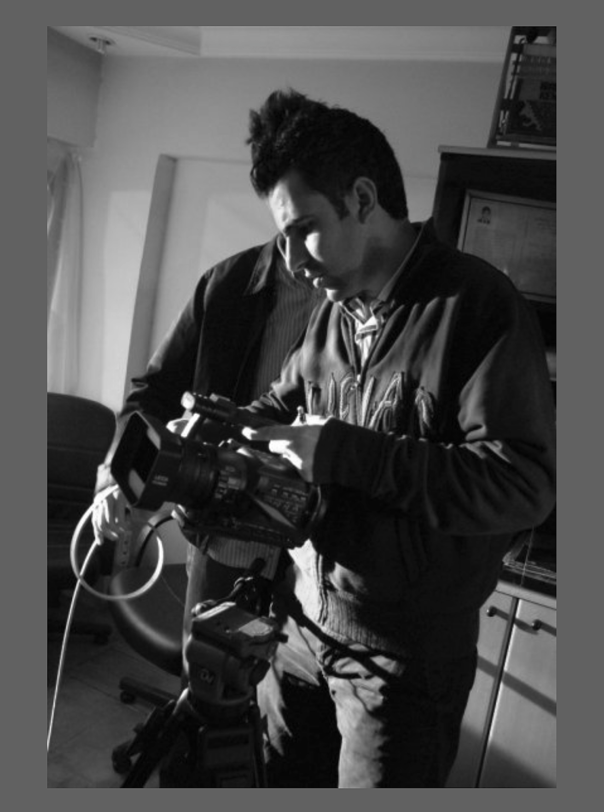

My name is Ibrahim, and I am a passionate photographer and filmmaker based in New York City. I'm thrilled to welcome you to my page and would love to share a little about myself. I’m deeply passionate about capturing life's most memorable moments through the lens, and my journey in photography began out of pure love for the craft. Over the years, my hobby has blossomed into both a profession and a lifelong passion.
Having studied photography and filmmaking, I've honed my skills to tell stories through imagery. To me, every photoshoot is a unique narrative—one that is personal and meaningful. I approach each project with enthusiasm and an unwavering commitment to capturing the essence of the subject.
Photography is my way of capturing the raw, inner beauty of people and moments. My creative process is built on the belief that every person and every moment has a story worth telling, and I aim to uncover that story in every shot.
For me, photography is an exploration—of the world, the people I meet, and myself. With every photoshoot, I continue to grow, learn, and draw inspiration, finding joy in the connections I make and the stories I tell through my work.